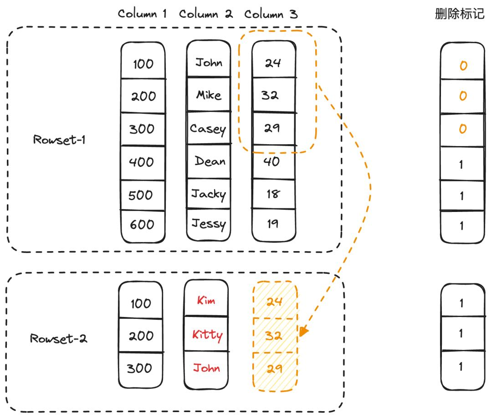

StarRocks Primary Key：实时更新不可缺少的利器
https://mp.weixin.qq.com/s/GG7_PnrwTrMbz82-69Y-Pg
Primary Key 模型可以在保证强大的实时更新能力的同时，具备极速的查询性能。那么 StarRocks 的是如何做到的呢？首先，在 AP 数据库系统中通常使用列存作为底层的存储引擎，一个表往往包含多个文件（或 Rowset），每个文件使用列存格式组织（例如 Parquet），并且是不可修改的。在这种组织结构的前提下支持更新，常见的实现方式包括：
- Copy on Write. 当一批更新到来后，需要检查其中每条记录跟原来的文件有无冲突（或者说 Key 相同的记录）。对有冲突的文件，重新写一份新的、包含了更新后数据的。这种方式读取时直接读取最新数据文件即可，无需任何合并或者其他操作，查询性能是最优的，但是写入的代价很大，因此适合 T+1 的不会频繁更新的场景，不适合实时更新场景。
- Merge on Read. 当一批更新到来后，直接排序后以列存或者行存的形式写入新的文件。由于数据在写入时没有做去重或者说冲突检查，就需要在读取时通过 Key 的比较进行 Merge 的方式，合并多个版本的数据，仅保留最新版本的数据返回给查询执行层。这种方式写入的性能最好，实现也很简单，但是读取的性能很差。
- Delta Store. 当一批更新到来后，通过主键索引，先找到每条记录原来所在的文件和位置（通常是一个整数的行号）。把位置和所做的修改作为一条 Delta 记录，放到跟原文件对应的一个 Delta Store 中。查询时，需要把原始数据和 Delta Store 中的数据进行 Merge。这里牺牲了部分写入性能来换取读取性能。
StarRocks 采用的是 Delete + Insert 的策略， 当一批更新到来后，通过主键索引，先找到每条记录原来所在的位置，把该条记录标记为删除，然后把最新数据作为新记录写入新文件。读取时，根据删除标记来将旧版本过期数据过滤掉，留下最新更新后的数据。该策略的好处是，因为无需像 Merge-on-Read 和 Delta Store 模式下进行 Merge，过滤算子可以下推到 Scan 层直接利用各类索引进行过滤减少扫描开销，所以查询性能的提升空间更大。
除了正常的全列更新和删除操作之外，主键模型还支持了部分列更新的能力。 针对不同的数据更新场景，我们提供了两种不同的部分列更新实现，在不影响查询性能的同时，尽可能地降低部分列更新的开销，从而能够保证更新的实时性。
行模式。 行模式比较适用于小批量的实时更新场景。实现方式是，在数据导入阶段，先生成只包含部分列数据的列存文件，到了事务提交阶段，通过主键索引找到对应行缺失的列数据，并回填到刚才生成的列存文件中，生成完整的列存文件。如下所示，部分列更新想要将<100, John>，<200, Mike>和<300, Casey>更新为<100, Kim>，<200, Kitty>和<300, John>，因此需要从 Column3 中读取对应的缺失列数据，并且将之前的行标记删除。
在行模式下，由于要补齐缺失的列数据，因此读写放大和更新的列占比有关。假设需要更新的列数占比为 C% 则读写放大的倍数为： `1/C%`

列模式。 列模式适用于大批量的批处理更新场景。实现方式是，通过主键索引找到被更新的记录所在的源列存文件，读取文件中的原始列数据，在和更新数据合并之后生成和源列存文件一一对应的部分列文件，在元数据中建立文件之间的映射。在执行查询时，由于无需做 Merge 操作，因此不会影响查询性能。如下图所示，我们重新生成了对应 Column2 更新之后的 DeltaColumn2 列文件，后续在构建 Iterator 时，会使用DeltaColumn2 替换 Column2。
而在列模式下，不需要补齐缺失的列数据，但是需要读取源列存文件中的原始列数据，在和更新数据合并后再写入部分列文件。因此其读写放大和其更新的行占比有关，假设需要更新的行数占比为 R% 则读写放大的倍数为： `1/R%`